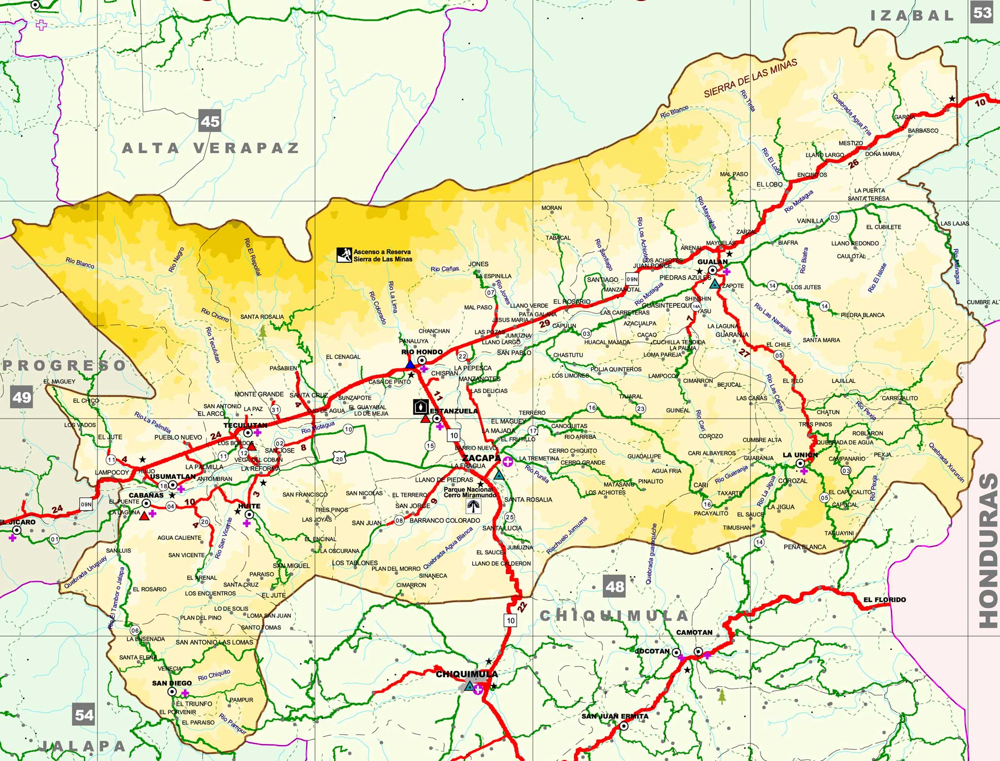

La cultura de Zacapa, un departamento en Guatemala, es rica y diversa. Aquí te dejo algunos puntos destacados: Ceremonias Religiosas: La cultura de Zacapa es una mezcla de tradiciones cristianas y mayas. Una ceremonia notable implica a dos hombres del barrio Cruz de Mayo montando caballos adornados con hojas verdes, simbolizando la temporada de verano.
Guatemala es un país con una rica diversidad lingüística. El idioma oficial es el español, que es hablado por la mayoría de la población. Sin embargo, también se hablan muchas lenguas indígenas, que son parte del patrimonio cultural del país. Aquí hay algunas de las lenguas indígenas más habladas en Guatemala: K'iche': Hablado principalmente en los departamentos de Quiché, Totonicapán y Quetzaltenango.
 Regresar